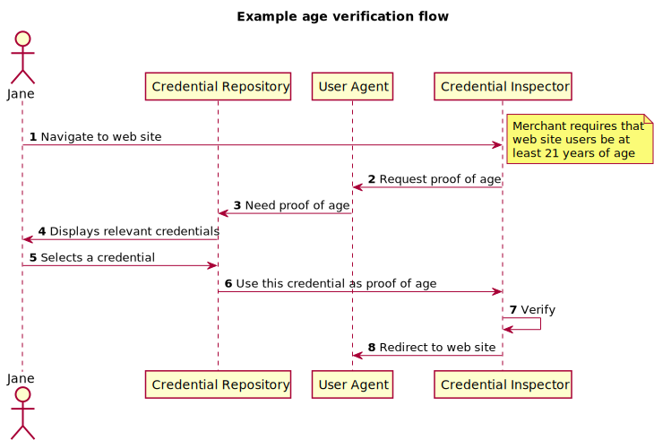

A verifiable claim is a qualification, achievement, quality, or piece of
information about an entity's background such as a name, government ID,
payment provider, home address, or university degree.
The use cases outlined here are provided in order to make progress toward
possible future standardization and interoperability of both low and
high-stakes claims with the goals of storing, transmitting, and receiving
digitally verifiable proof of attributes such as qualifications and achievements.
The use cases in this document focus on concrete scenarios that the technology defined
by the group should address.
This document represents a concise but limited collection of use cases readers should review in
conjunction with the proposed Charter for a Verifiable Claims Working Group.
Introduction
The Verifiable Claims Task Force of the Web Payments Interest and
Credentials Community Groups at the W3C is investigating
the requirements around secure, verifiable, and richly descriptive
"claims". The goal of the Task Force is to determine if
there is a sufficient understanding and need to merit the creation
of a W3C Working Group to develop Recommendations in this space.
This document does NOT attempt to define an architecture for
the support of Verifiable Claims. Instead it expresses the sorts
of needs that real users have that could be addressed through support
for some sort of user oriented claim environment. It attempts to use
terminology that is consistent with the other deliverables of the
Verifiable Claims Task Force (you can see a summary of these terms
in Appendix A).
Importance of this Work
People need to make many kinds of claims as part of their
everyday lives.
As more important business moves to the Internet, people need
to be able to transmit instantly verifiable claims about their
accomplishments and qualifications. From educational records
to payment account access, the next generation of web
applications will authorize users to perform actions based on
rich sets of credentials issued by trusted parties.
Human-mediated decisions about job applications, collaboration,
and professional development will depend on filtering and
analyzing growing amounts of data about individuals'
experience and accomplishments.
Standardization of digital claim technologies makes it
possible for many stakeholders to issue, earn, and trust these
essential records about their counterparties, without being
locked into proprietary platforms.
User Needs
Instead of a traditional, tech-centric approach to presenting user stories, this document
embraces the point of view of the User. To that end, this section is organized by
industry verticals / uses and the needs of people in those categories.
Finance
@@@ Brief intro @@@
F.1 Reuse Know Your Customer
Jane would like to get a digitally signed credential for her
checking account at MidBank. MidBank offers to provide a
credential asserting that Jane has an account at MidBank and
has access to her associated checking account. MidBank has
performed "Know Your Customer" clearing (driver’s license,
background check, anti-money laundering blackslist check,
etc.), on Jane which she can use at other financial
institutions. This can help Jane assure destination banks that
she is verified, thereby allaying concerns about misdirected
transactions and money laundering.
F.2 Money Transfer
Susan wants to send funds to her family in another country via a
popular money transfer service. She has verifiable claims in her
credential repository that can be used to share her identity profile.
She has also been
sent a claim from her family verifying their banking information.
By sharing these with the money transfer service, they can
automatically verify the source and destination of funds, thus being
confident in the delivery of those funds and satisfying various
regulations regarding prevention of money laundering.
F.3 Closing Account
John opens a checking account at Big Bank Co and is issued a Verifiable Claim
indicating that the account exists, that the bank verified John's identity, and that
John has access to the account. Some time later, John is moving to a new city and
decides to close that account. Big Bank Co needs to revoke that claim as part of their
normal account closing process.
F.4 Trying out a new service
Nikita has several accounts with BigBank, as well as a
brokerage account with WallStreetCo. She had placed all of her claims
in a credential repository at BigBank that came free
when she opened her accounts. WallStreetCo is now offering a new
repository that has an interface she thinks she will prefer.
Nikita copies
her claims from BigBank into the repository at WallStreetCo to
experiment with their service, but continues to use the service
from BigBank while she is testing.
F.5 New Bank Account from Home
Alice wants to open a new bank account.
BigOnlineBank offers the ability to do this from home if she can
provide electronic credentials. She offers government issued
certificates that verify her identity (address, national identity
number, etc.), and opens her new account from her couch.
Education
@@@ Brief intro @@@
E.1 Digital Transcript
Joleen is the registrar of Mega University and, by virtue of
her office, is responsible for the integrity, accuracy, and
security of academic records. Joleen has been a pioneering
registrar in advocating an 'extended transcript' that includes not
only the standard set of course grades but also adds supplementary
information on learner competencies. These might include work
experiences and non-educational but marketable skills. Upon the
request of her students Joleen issues digital credentials that
encapsulates an extended transcript.
E.2 Taking a Test
Eunice is about to take her ACT (a test used to evaluate her readiness for
college). When she arrives at the testing center, she is required to present
identification. Her government-issued identity certificate
is acceptable, as the verifiable claims
contained in it reflect all of the required attributes and it is impossible to counterfeit.
E.3 Transferring Schools
Rocky is an undergraduate student at Wossamotta U. His school
provides a credential repository service to all students and alumni,
so he chooses to use it. In his third year, Rocky decides to
transfer to Moosylvania Tech. They do not offer a service, but
he does not want to continue to use the service of his old (and
now rival school) so he moves his claims to the
service offered by his bank without needing to have them
reissued.
E.4 Online Classes
In MOOC and other on-line learning systems, being able
to reliably identify participants is vital to ensure the
individual evaluation and certification. Nick is participating in
a course online and takes a test.
He is required to provide his
credentials to prove his identity before the test, and
then to allow the system to issue a verifiable claim regarding the results of
his test.
Healthcare
@@@ Brief intro @@@
H.1 Prescribing
Barney is a physician, and has recently become board certified in his state.
The state's board issues Barney a digital certificate confirming that he is certified
to practice medicine in that state. Barney can now use this certificate when writing
prescriptions and referrals, thereby improving accountability and verifiability.
H.2 Online Pharmacy
iPharmacy receives a prescription for Bob electronically from a local
clinic. It includes a certificate about the physician that issued
the prescription as well as one about Bob. iPharmacy's
system automatically verifies the ability of the physician to
write prescriptions, as well as Bob's insurance coverage.
When Bob arrives to pick up his medication, iPharmacy
further correlates his identity with the certificate, thereby
improving the end-to-end accountability of their system.
H.3 Insurance Claim
Tracy has a sore throat soon after moving to a new town. She finds a physician through
her health care network and goes in for treatment. She is a new patient, so the
clinic needs to know who she is and how she will be paying. When checking in, she
presents her verifiable claim that demonstrates her identity and her proof of
insurance. When the clinc submits this to the insurance company, they can
automatically ascertain that she submitted her proof of identity and insurance to the provider
and granted the physician the ability to submit the claim for payment.
H.4 Traveling Illness
John is on the vacation of a lifetime, travelling the world. Falling ill, he
visits a health clinic in a country in which he does not live.
At the clinic he is
asked for proof of identity. He provides a credential that
verifies his name and address, but elects not to disclose his
marital status nor his social security number, as those are
neither requested nor required at this clinic. He further marks
the disclosure as expiring in 30 days - he does not want his
information verifiable after that time.
Retail
@@@ Brief intro @@@
R.1 Address Verification
Francis has found the perfect pair of shoes.
When processing orders, Giant Shoe Company wants to be certain
that his shipping address is accurate (inaccurate
addresses are very expensive in terms of customer service). They
offer a discount for customers who make verifiable addresses
available as part of the checkout process. Francis offers his
certificate and gets the perfect shoes for even less than he
expected.
R.2 Adult Beverages
June goes to her local beer and wine store to buy a
bottle of wine. She submits her identity credential that
lets the liquor store owner know that she is over 21
without having to reveal her actual date of birth,
her address, or her state ID number.
Professional Credentials
@@@ Brief intro @@@
C.1 Find a Doctor
Jason is looking for a new primary care physician. His health
provider includes information on their web site about the physicians
they have on staff, including verifiable credentials about their
education, board certification, and continuing education. Jason can
verify these credentials and be confident that his new physician
satisfies his requirements.
C.2 Busy Doctor
Barney was a board certified physician, but he ran out of
time to complete his contuning education requirements and his
certification lapsed. Since the board can revoke his
certification, credential inspectors will automatically be
aware that he can no longer issue prescriptions or perform medical
procedures.
C.3 Bad University
Jane was issued a certificate by BigTraining Co., indicating
that she was a trained Project Manager. It was later discovered
that BigTraining Co. was not actually training anyone, and their
organization's certificate was revoked via the US Department of
Education's Accreditation Database. Jane's credential is
therefore invalid, and prospective employers will be aware of
this when they check her certifications.
C.4 New Employer
Jessica is a medical doctor practicing in the United States.
She has a variety of digital claims that explain her
qualifications, schooling, continuing education achievements, and
board certifications. These are all stored in the credential
repository provided by her employer. When she is offered a
position with another health provider network, she can
automatically transfer all of these claims to her new
employer.
C.5 Social Authority
Josie is a healthcare worker that has created a
profile on a professional social network to make herself
readily available for new opportunities in the
workforce. She lists her employment history and
credentials including degrees, certificates, and digital
badges. The website requests verification of her
credential claims in order for her credentials to
visible when she posts messages.
Josie authorizes the sharing of the relevant claims with the
website, and the site verifies them before
allowing Josie to expose them.
C.6 Job Applicant
Software Co. has posted an open position online and they are
receiving thousands of applications. Cindy has applied for the
job. Unlike many applicants, she has attached her education credentials
- college degree, additional specific software training, etc. Software Co.
evaluates these credentials automatically as they receive her
application. Because her materials are verifiable and verified,
her application is immediately forwarded as a viable
candidate.
Legal Identity
@@@ Brief intro @@@
L.1 Digital Driving License
Asako just passed the final test to receive a drivers
license. As she is still a new driver, and may be pulled over
for a traffic violation, she would like to receive a credential
that asserts a claim that she has right to drive a car. She
requests a credential from the certifying authority
(issuer) that she can use to prove to the officer
(credential inspector) that her claim is
valid.
L.2 Seamless Immigration
Tom is a frequent international traveler. In order to speed processing
through immigration check points, he applies for a digital passport from
his governmental authority. After satisfying background check requirements,
the authority issues Tom an electronic version of his passport. This
version is verifiable and retains a history of all the places he visits so
that immigration officials can quickly and easily evaluate his suitability as a
visitor to their country. Once they are satisfied, the will automatically add the
details of this new visit to Tom's passport.
L.3 Speedy Air Travel
Security for air travel is more and more rigorous, requiring more and more time to validate
each passenger. Ivan has a collection of verifiable claims that are assembed into his
air travel Identity Profile. When Ivan needs to pass through a security checkpoint at his airport,
he presents this profile before entering the line. Because his identification can be immediately and automatically
verified, he is permitted to skip the long line and go straight to the metal detector.
L.4 Refugee Crisis
Thousands of people each year are displaced because of man-made and natural disasters. Anoushka is one such,
having been forced to flee her village along with her mother and younger brother. They
reach an IFRC center just across the broder in a relatively
safe area, but with no documentation. Since the government of her homeland is in turmoil, there is no way for the IFRC staff
to easilty establish their identities. Fortunately, Anoushka had been issued a self-soverign proof of birth, attached to which
is the proof of birth and marriage for her parents. She is able to retrieve this because it is available from many places on
the Internet. Since it is verifiable, the IFRC is comfortable vouching for them and resettling them in a safer area for the
duration of the conflict.
Examples
These examples describe basic ways in which Verifiable Claims
might be used. They are not meant to be architecturally constraining. Instead,
they are meant to help illustrate the basic way it could be done in a
typical commerce situation.
Again - please remember that it is just an
example, and should not be thought of as the canonical way such
a claims environment must be implemented.
How a Verifiable Claim Might be Created
In this first example, a user will request a Verifiable Claim - a
confirmation of their identity. Consider this illustration:

Expanding on these steps:
- Jane asks her User Agent to help her get a Verifiable Claim about
her identity.
- Her user agent connects her to a certificate issuer that is able
to verify her identity.
- The issuer examines her documentation.
- They are satisfied, so the issuer generates a Verifiable Claim for
Jane that includes information about her identity linked to their
own trusted credential.
- The issuer delivers the credential back to Jane's User Agent.
- Jane views the credential to ensure it reflects her
requirements.
- When she is satisfied, she instructs her User Agent to save the
Verifiable Claim so she can use it in the future.
- The UA communicates with her Credential Repository,
instructing it to store the new claim.
- The Credential Repository returns a list of the claims it is
holding for Jane to the UA.
- The UA shows Jane her claim collection - confirming
everything she has available.
How a Verifiable Claim Might be Used
In this example, a holder of a claim needs to use that claim in a
typical commerce situation:

- Jane decides to shop on the web site
WinesOfTheWorld.example.com (merchant).
- The merchant's site requires Jane be 21 years of age and
requests Jane prove this (via a user agent-supported API call).
- Jane's user agent asks her credential repository for the
proof.
- The credential repository shows Jane three Verifiable Claims
it knows of that
can assert this claim (e.g., her passport, driving
license, and birth certificate).
- Jane selects one of these and authorizes that it be
shared with the merchant.
- The credential repository returns the selected claim as a response
to the user agent-supported API call, which in turn delivers
it to the merchant.
- The merchant's server verifies that the claim is valid
and satisfies the requirement.
- The merchant redirects the user agent to the web site
with appropriate authorization.